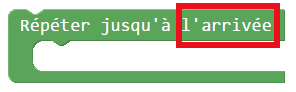
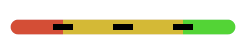
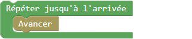
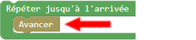

Comment guider {ROBOT_NAME}?

|
Le style des cartes est identique à celui de l'activité 1. |
|
|
Tu devras utiliser les mêmes blocs que tu as utilisé dans l'activité 1 :
Les blocs |
 et
et  .
.
Voici une nouveauté
Dans cette activité, tu pourras utiliser un nouveau bloc, la boucle :

La boucle te servira à regrouper des commandes comme dans l'activité À vos programmes.
Dans cette activité, tu pourras utiliser un nouveau bloc, la boucle :
Pour ce bloc, cela veut dire que la boucle sera répétée jusqu'à temps que Robotino soit à l'arrivée.
Cela veut dire que les commandes que tu places à l'intérieur de la boucle seront lues à répétition jusqu'à ce que {ROBOT_NAME} soit à l'endroit indiqué par le bloc.
Pour ce bloc, cela veut dire que la boucle sera répétée jusqu'à temps que Robotino soit à l'arrivée.
Cela veut dire que les commandes que tu places à l'intérieur de la boucle seront lues à répétition jusqu'à ce que {ROBOT_NAME} soit à l'endroit indiquer par le bloc.
Pour ce bloc, cela veut dire que la boucle sera répétée jusqu'à temps que Robotino soit à l'arrivée.
|  |
Voici un exemple d'une boucle "répétér jusqu'à l'arrivée" qui contient un bloc avancer :  Appuie sur les flèches de ton clavier pour exécuter le programme étape par étape. |
|
Voici un exemple d'une boucle "répétér jusqu'à l'arrivée" qui contient un bloc avancer : |
|
Voici un exemple d'une boucle "répétér jusqu'à l'arrivée" qui contient un bloc avancer :  |
|
Voici un exemple d'une boucle "répétér jusqu'à l'arrivée" qui contient un bloc avancer : Est-ce que {ROBOT_NAME} a atteint l'arrivée ? |
|
Voici un exemple d'une boucle "répétér jusqu'à l'arrivée" qui contient un bloc avancer : Est-ce que {ROBOT_NAME} a atteint l'arrivée ? Non, alors l'application recommence à lire les commandes de haut en bas. |
|
Voici un exemple d'une boucle "répétér jusqu'à l'arrivée" qui contient un bloc avancer : |
|
Voici un exemple d'une boucle "répétér jusqu'à l'arrivée" qui contient un bloc avancer : Est-ce que {ROBOT_NAME} a atteint l'arrivée ? |
|
Voici un exemple d'une boucle "répétér jusqu'à l'arrivée" qui contient un bloc avancer : Est-ce que {ROBOT_NAME} a atteint l'arrivée ? Non, alors l'application recommence à lire les commandes de haut en bas. |
|
Voici un exemple d'une boucle "répétér jusqu'à l'arrivée" qui contient un bloc avancer : |
|
Voici un exemple d'une boucle "répétér jusqu'à l'arrivée" qui contient un bloc avancer : Est-ce que {ROBOT_NAME} a atteint l'arrivée ? |
|
Voici un exemple d'une boucle "répétér jusqu'à l'arrivée" qui contient un bloc avancer : Est-ce que {ROBOT_NAME} a atteint l'arrivée ? Oui ! alors l'application arrête de lire les commandes de la boucle. |
Porte une attention particulière aux informations que {ROBOT_NAME} te donne.
Il peut parfois te donner un nombre maximum de blocs que tu peux
utiliser.
Exemple: utilise au maximum 6 blocs...

Une dernière chose avant de partir en route vers l'antenne.
Si tu fais une erreur, tu peux replacer {ROBOT_NAME} au point de départ avec ce bouton:

À toi de jouer !

Clique sur le bouton SUIVANT, en haut à droite, pour continuer